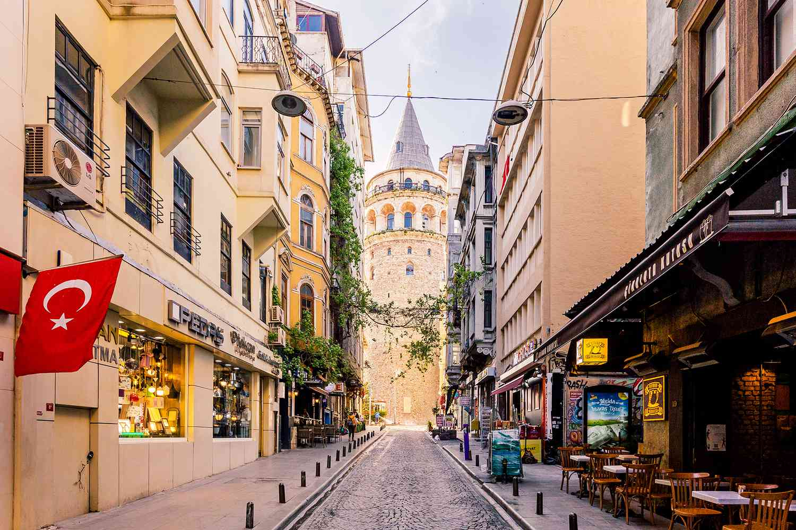
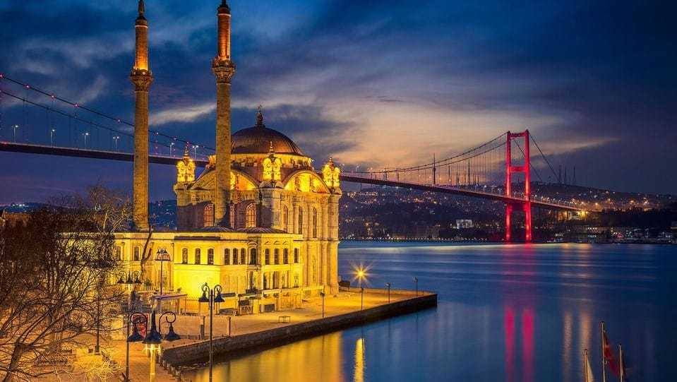

Programme de Séjour
- Jour 1 : [Tunis / Istanbul]
RDV à l’aéroport, assistance et embarquement à destination Istanbul via Turkish Airlines. Arrivée, accueil et transfert à votre hôtel. - Jour 2 : [Petit Déjeuner Turc, City Tour & Shopping]
Départ tôt le matin à 08h :30. Commencez la journée par un petit déjeuner Turc dans un endroit instagrammable à Galata port avec une vue panoramique sur le Bosphore.
continuation vers Ortakoy, quartier du kumpir savourez une tasse de café ou un thé Turc sur là-bas, puis visite au fameux quartier des Juif à Istanbul : Balat. Thème du quartier : Les escaliers, parapluies et cafés en couleurs
Ensuite, montée téléférique au belle Terrace du Pierre Loti qui se trouve au sommet de la colline Sultan Eyup avec vue panoramique sur toute la corne d'or qui divise la partie européenne d’Istanbul en deux parties. Et vous terminez la journée à VENEZIA MEGA OUTLET. Temps libre pour shopping et découverte de l’endroit.
Retour à l’hôtel et soirée libre - Jour 3 : [Journée de découverte à Çamlıca] Petit déjeuner à l’hôtel, un départ matinal tôt vers kabatas ou bien Ortakoy via le bus. Par la suite direction vers Üsküdar pour prendre un bol d’air frais, temps libre pour prise des photos – dégustation du fameux Smit et d’admirer la rive Européenne. Continuation de la monté par bus vers la rive asiatique d’Istanbul où se trouve la Colline de Çamlıca : temps libre pour prise de photo et entrée au Çamlıca Mosquée dans le style ottoman inspiré de l'architecture religieuse byzantine. Fin de journée direction vers le meilleur Mall Outlet « 212 Istanbul Power Outlet » pour shopping.
Retour à l’hôtel et soirée libre. - Jour 4 : [Dîner sur le Bosphore] :
Petit déjeuner à l’hôtel, et matinée libre pour shopping.
Le soir : départ pour dîner et assister à une soirée spectacle sur l’une des plus belles croisières orientales sur le Bosphore, soirée & Show oriental en naviguant sur le somptueux Bosphore. Admirez les Palais des sultans ottomans
Et les vues sur les côtes européennes et asiatiques de nuit. Regardez des danses orientales en direct animées par des chanteurs Syriens et Irakiens, laissez-vous séduire par une danseuse du ventre, régalez-vous par un open buffet orientale et internationale et de la musique en direct, tarab, dabke arabe ...
Fin de soirée & Retour à l'hôtel. - Jour 5 : [Sapanca & Masukiye avec Déjeuner]:
Petit-déjeuner à l’hôtel. Départ tôt le matin vers Sapanca & Masukiye, 2 heures de route via l’autoroute en traversant le pont suspendu surplombant du Bosphore et l’Istanbul asiatique, puis la vallée et les forêts de Masukiye. Là où notre aventure commence, on profite du moment avec les quads-safari (paiement sur place) qui commence devant les cascades, puis au milieu des forêts et atteint le plus haut sommet de la montagne où il y a une vue sur le village et tout le lac de Masukiya.
Continuation vers la corde suspendue où vous pouvez Sauter d’un endroit à un autre par des cordes suspendues dans les airs au cœur du foret (optionnel). Après avoir terminé, nous nous dirigeons au sommet du mont Kartepe pour une vue panoramique de la région sur la Terrasse en Verre transparent (paiement sur place) suspendue entre les montagnes. Une vue panoramique incroyable mais vrai. Lorsque nous descendons de la terasse, on arrive au village pour le déjeuner (grillades turques +frites+salade+boisson gazeuse) avec une superbe entre les cascades.la dernière station sera destinée aux ruches à miel pour en apprendre d’avantage sur les types du miel de montagne.
Retour à l'hôtel et soirée libre. - Jour 6 : [Journée Bursa avec Déjeuner + téléphérique]
Petit déjeuner à l’hôtel. Excursion d’une journée à la ville de Bursa, ville de Shopping, de la Soie et de sport d’hiver « Ski ». Visite de la Mosquée Verte, montée à la forêt d’Uludag par téléphérique « sauf arrêt pour entretient », déjeuner grillade dans un restaurant traditionnel turc. Retour à l’hôtel & nuitée. - Jour 7: [ Retour à Tunis ]
Petit-déjeuner à l’hôtel, transfert à l’aéroport selon vos horaires de vol et embarquement sur vol Turkish Airlines à destination de Tunis.
Découvrez la Turquie en images





Nous avons sélectionné pour vous 3 Hôtels de très bonnes qualités :
- Grand ons hôtel 3*
- Hôtel Euro Plaza 4* à Taksim
- Hotel Taxim Express 4*
Tarif & Réservation
Tarifs
| Désignation | Sous-total |
|---|---|
| Chambre Double | 2150DT |
| Chambre Single | 2790DT |
| Enfant( 2 / - 06 ans) partageant chambres avec les parents (sans lit supplémentaire) | 1590DT |
| Enfant (+ 06 / - 12 ans) partageant chambres avec les parents (sans lit supplémentaire) | 1690DT |